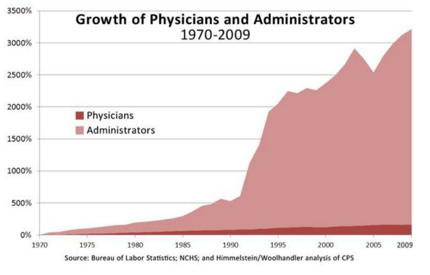

0.1. Preface
0.2. Introduction: Lessons from WWI and Why I’m Running for Congress
1. Economics
2. Biological and Social Order
3. Creation and Spread of Information via Biological Evolution
4. More complexity requires more information
4.1. Production and Consumption
4.2. Money
4.3. Trade, Money and the Division of Labor and Information
4.4. Creation and Spread of Information via Economic Competition
4.5. Prices and the Impossibility of ‘Central Planning’/Socialism/Communism
4.6. Morals as Superior Information
4.7. Regulatory Paralysis
4.8. Government/‘Public Sector’ is an Inefficient Monopoly
4.9. Savings, Interest Rates, Business Cycles, and Recuperating Coronavirus Job Losses.
4.9.1. You can’t print savings/wealth. The Errors of Keynes, Krugman and the mainstream.
4.10. The benefits of immigration
4.11. Hayekian Cultural Evolution and Applications in One Ridiculously Brief Lesson
4.12. Private Governance
4.13. Race-Related Fallacies Fueling the Left/Right Political Divide
5. The Environment
5.0.1. Dealing with pollution
5.0.2. The Conservation of Species
6. We must join Mises and go over the parapet in his “intellectual battle” against the economic ignorance that threatens civilization.
I am running for US House of Representatives in Washington State’s Congressional District #9 as a member of the Libertarian Party The purpose of my campaign is to spread an understanding of economics to as many people as possible.
I was born in Cuba, one of the few countries still under the spell of the fallacious and economically disastrous ideology of Communism. I came to Miami (Cuba 2.0) when I was 11 where I also got my degree in Computer Science at FIU. I now reside in Washington State where I work as a contractor for Microsoft.
This is an Open Source book which anyone can contribute to by going to its github repository at https://github.com/VitalEconomics/Book1 and gets updated frequently.
Please like and share https://www.facebook.com/votebesada/
Visit https://votebesada.com
This work is licensed under a Creative Commons Attribution 4.0 International License https://creativecommons.org/licenses/by/4.0/
Version 0.91
Cover photo taken at 1974 Nobel Laureate in Economics F.A. Hayek’s final resting place in Vienna, Austria
In August 10, 1915, British physicist Henry Mosely, who would have probably won the Nobel Prize that year, died in perhaps the most disastrous error mankind has thus far made, The First World War (1914–18). Bright and pious German/French/British/Russian… students, fathers, engineers, “great minds” and “experts”, who even shared a common European Christian faith, reverted to their tribal ape-like nature, and for God, honor, flag and country, slaughtered each other leading to about 18 million deaths. At 7:30 am July 1st, 1916 the ‘Battle of the Somme’ began. On this single day, just the British alone, had about 20,000 fatalities and 35,000 wounded. On that day a British soldier was either killed or wounded on average every second. The “honor” of a military career would lead to disproportionately higher losses for the upper classes for all belligerents. Germany’s top general, Erich Ludendorff would lose two sons, as would future British Prime Minister Andrew Bonar Law. British Prime Minister at the start of the war, Herbert Asquith, lost one. While about 12% of British troops would die in the war, 31% of Oxford’s 1913 graduating class would die. This should help abolish the popular naive myth that politicians are quick to bring about wars while wanting to avoid personal loses in them. Nonsense unfortunately, the slightly smarter human apes have been naturally selected to be vicious killers and to enjoy war. Warfare/predation was perhaps the optimal evolutionary strategy and one of the main reasons we are social and have evolved big brains to begin with. As Steven Pinker writes:
“… men go to war to get or keep women –not necessarily as a conscious goal of the warriors(though often it is exactly that), but as the ultimate payoff that allowed a willingness to fight to evolve. Access to women is the limiting factor on male’s reproductive success. Having two wives can double a man’s children, having three wives can triple it, and so on. The most common spoils of tribal warfare are women. Raiders kill the men, abduct the nubile women, gang-rape them, and allocate them as wives.” ( Steven Pinker’s “How the Mind Works” 1999, p. 510)
First you increase the economic pie available to your self/tribe/gene-pool by coordinating a raid and killing other men (eating them too since cannibalism seems to have been popular in our evolutionary past), and then you increase your reproductive success by raping the women and making them yours. To be successful in war you need a strong sense of unity which translates itself into the strong nationalist/militaristic/patriotic tendencies we are so susceptible to and has the planet littered with nuclear weapons and “civilized” taxpayers believing we must have them. The bond men make as co-warriors is likely stronger than male/female love. A female is easily replaceable (another raid, etc.) but the loss of that co-warrior that will help get the next female and/or defend you when you only get one chance at life is probably even more important. Just like natural selection has shaped us to enjoy sex due to the vital biological/evolutionary importance, it has also shaped us to enjoy war/violence and easily segregating ourselves into the in-group/us/“good” vs. out-group/them/“evil”. Given its importance, war/patriotism easily fills us with a great sense of purpose. England’s prime minister during WWII and national hero Winston Churchill shows us how inspiring, exciting and purposeful WWI was to him when he mentioned:
“I think a curse should rest on me - because I love this war. I know it’s smashing and shattering the lives of thousands every moment - and yet - I can’t help it - I enjoy every second of it.” (Churchill)
And in another occasion:
“My God! This is living History. Everything we are doing and saying is thrilling… Why I would not be out of this glorious delicious war for anything the world could give me…” (Churchill, per Margot Asquith)
Towards the end of WWII, Russia’s Red Army is estimated to have raped over 2 million German women. Equally human, the Allies/Americans weren’t much better and generally saw the Japanese as an inferior race and cared little for their suffering or views, as US president who nuked Hiroshima and Nagasaki, Harry S. Truman, mentions in a letter:
“The only language they seem to understand is the one we have been using to bombard them. When you have to deal with a beast you have to treat him as a beast.” (Truman letter to Samuel McCrea Cavert, General Secretary of The Churches of Christ in America)
We shouldn’t be shocked when men murder, rape and torture, or masturbate to tentacle porn, the real miracle that has taken thousands of years of cultural/legal evolution to create, are the modern cultural values/laws we absorb that program us into respecting the body/property/thoughts of all human beings regardless of age, sex, beliefs, and race. Being the social slightly smarter apes that we are, fellow humans are our biggest assets which helps explain the evolution of altruism/compassion due to the great benefits we get at the group-level, and horrendous violence towards fellow men since we are our biggest competitors.
How can mankind build mindbogglingly complex microchips, smartphones, the Internet and so much more, yet still not have figured out something as simple as peace? Why is it that every day at Microsoft I interact with co-workers from Russia, China, Iran, Israel, etc. yet our tribalistic governments are mired in conflict? Is there something to be learned from the fact that in July 1914 so many people/Henrys/leaders/“experts” brainwashed themselves into such needless carnage yet hardly anyone today has the slightest clue why WWI was fought? Everyone in that tribal disaster died for absolutely nothing! Similarly, is there something to be learned from the fact that with the best of intentions and guided by numerous bright intellectuals millions during the 20th century fell for Socialism/Communism thus inadvertently bringing unimaginable suffering upon themselves? and that to this day hardly anyone in the entire planet knows why Communism IS 100% IMPOSSIBLE to implement without it leading to socioeconomic chaos/famines(explained below)? Based on a quickly-revised and later totally discredited “epidemiological model” which grossly overestimated the lethality of the Coronavirus pathogen by British Professor Neil Ferguson, in about 2 months the Coronavirus-related economic shutdowns and restrictions which have been strongly advised by ‘well-meaning scholars’ like top US Infections Disease expert Dr. Anthony Fauci have led to over 36+ million Americans losing their jobs and have the USA and much of the world headed towards a WWI-like tribalistic socioeconomic calamity which might very well be mankind’s Final Disaster. The three aforementioned calamities all have one common root. Massive ignorance of how the socioeconomic order works! As 1974 Nobel Laureate in Economics F.A. Hayek tells us:
“Most people are still unwilling to face the most alarming lesson of modern history: that the greatest crimes of our time have been committed by governments that had the enthusiastic support of millions of people who were guided by moral impulses. It is simply not true that Hitler or Mussolini, Lenin or Stalin, appealed only to the worst instincts of their people: they also appealed to some of the feelings which also dominate contemporary democracies.” (Hayek F. A., 1976, p. 134)
“It is necessary to realize that the sources of many of the most harmful agents in this world are often not evil men but high-minded idealists, and that in particular the foundations of totalitarian barbarism have been laid by honourable and well-meaning scholars who never recognized the offspring they produced.” (Hayek F. A., 1973, p. 70)
The human body and the numerous “systems” that coordinate it like the respiratory, nervous, and digestive “systems”, is the result of the actions of some 30 trillion cells but obviously NOT the result of any conscious planning, designing, or conspiring by them. Thanks to the likes of Darwin and a modern understanding of genetics we can understand how natural selection was the inadvertent “designer” of such systems and complex order. The global socioeconomic order, or what the great British 19th century thinker Herbert Spencer referred to as “The Social Organism”, is also coordinated by a “system”, by what economists of the so-called ‘Austrian School’, like F.A. Hayek and his great mentor Ludwig von Mises, referred to as “The Market Process”. ‘The Market Process’ and the “parts” it is composed of like money, prices, economic competition, interest rates, and the legal/religious/governmental frameworks that sustain it, “are indeed the result of human action, but not the execution of any human design” (Adam Ferguson).
Standing on Mises’ shoulders, who provided him with a superb explanation of the workings of the economy and thus all aspects of the market process(money/prices/‘interest rates’/etc.) and much, much, much more, Hayek would go on to explain how in a few thousand years culture and ‘the market process’ had co-evolved to transform homo sapiens, from tribes of slightly smarter vicious apes, into today’s massively complex global socioeconomic order/‘Social Organism’ thus arguably becoming the first person in the history of mankind to provide a complete evolutionary understanding of how the world works. Ignorance of how the socioeconomic order works and has evolved is what keeps plunging the slightly smarter apes, regardless of their “experts” and “great leaders”, into tribalistic world wars and economic disasters like the current Coronavirus-related economic shutdowns and resulting socioeconomic chaos and tyranny. Hayek is still is so far ahead of our time that even today’s leading thinkers, like renowned popular science writer Matt Ridley, are just beginning to catch up to the enormity of his insights. Ridley humbly acknowledges this in a 2011 speech where he mentions:
“As someone who came to Fredrick von Hayek comparatively late in life, I’m still catching up with him…Indeed, many of the insights I thought I had discovered in my own readings and writings on the frontier of evolutionary biology and economics it turns out Hayek had long before me…It’s Hayek who first puts it all together.” - Matt Ridley
So how did Hayek ‘put it all together’?. Easy. Hayek realized that all living things require precise information to sustain/coordinate/expand their order. If one understands how information coordinates the biological and social orders, then one understands how the world works. It is that simple! Let’s briefly try to get a feel for how Hayek saw the world.
This book is written with a ‘Misesian Ethos’. The great economist Ludwig von Mises wrote towards the end of his monumental treatise “Human Action” (free PDF) (Amazon.com)
"Economics must not be relegated to classrooms and statistical offices and must not be left to esoteric circles. It is the philosophy of human life and action and concerns everybody and everything. It is the pith of civilization and of man’s human existence…All present-day political issues concern problems commonly called economic. All arguments advanced in contemporary discussion of social and public affairs deal with fundamental matters of…economics. Everybody’s mind is preoccupied with economic doctrines…Everybody thinks of economics whether he is aware of it or not. In joining a political party and in casting his ballot, the citizen implicitly takes a stand upon essential economic theories…As conditions are today, nothing can be more important to every intelligent man than economics. His own fate and that of his progeny is at stake…all reasonable men are called upon to familiarize themselves with the teachings of economics. This is, in our age, the primary civic duty. Whether we like it or not, it is a fact that economics cannot remain an esoteric branch of knowledge accessible only to small groups of scholars and specialists. Economics deals with society’s fundamental problems; it concerns everyone and belongs to all. It is the main and proper study of every citizen."
And in another occasion:
“If we want to avoid the destruction of Western civilization and the relapse into primitive wretchedness, we must change the mentality of our fellow citizens. We must make them realize what they owe to the much vilified”economic freedom," the system of free enterprise and capitalism. The intellectuals and those who call themselves educated must use their superior cognitive faculties and power of reasoning for the refutation of erroneous ideas about social, political and economic problems and for the dissemination of a correct grasp of the operation of the market economy. They must start by familiarizing themselves with all the issues involved in order to teach those who are blinded by ignorance and emotions. They must learn in order to acquire the ability to enlighten the misguided many.
It is a fateful error on the part of our most valuable contemporaries to believe that economics can be left to specialists in the same way in which various fields of technology can be safely left to those who have chosen to make any one of them their vocation. The issues of society’s economic organization are every citizen’s business. To master them to the best of one’s ability is the duty of everyone."
This is why I am running for office. Because spreading an understanding of economics is ‘in our age, the primary civic duty’ and running for office is a great way to place ourselves where people are looking for answers and leadership.
“Enduring structures” like living things and society are self-perpetuating orders that are in continuous cycles of wealth production and consumption. Production involves the transformation or relocation of matter to create wealth, and consumption transforms/relocates wealth/matter in a way that sustains or expands living things/orders and their internal parts/orders. The Sun sends us photons/energy which the process of photosynthesis is able to store in chemical form. This energy is then used to power the cycles of production/consumption. If there is more production than consumption then the order is profitable and thus has additional wealth with which to sustain itself for longer periods and/or grow. For example, paramecium are single-celled life-forms that produce food/wealth by swimming around and swallowing small bacteria which they then consume by digesting and transforming them into the various nutrients/wealth needed to maintain and expand the paramecium’s internal order and thus life. A more complex multi-cellular animal like a person, is simply a collection of cells (which are themselves orders) which must be productive as a whole in order to produce and then consume the necessary wealth needed to nourish itself and the sub-orders/organs/cells/organelles it is composed of. Today we not only have biological order, we have social order, Spencer’s “Social Organism”, which is rapidly growing and increasing its ‘rate of production’, in other words, the rate at which it transforms the earth’s matter into human usable wealth/order/life/biomass. Every year, increasingly automated building-sized machinery in the mining industries scrape/mine less than 10 cubic miles of matter from the earth’s massive volume of 260 billion cubic miles. This matter is ‘collaboratively transformed’ or relocated by billions of people as trillions of dollars worth of wealth in terms of cars/computers/buildings/products/etc. are produced thus increasing the word’s economic pie of wealth and social order. These continuous cycles of production and consumption require precise knowledge/information. By focusing on how information arises, spreads, and guides these cycles of production and consumption which lead to order/life/society we can have a simple yet profound understanding of how the entire world works.
“Processes of selective evolution” can be said to have created two mechanisms for creating two types of orders/“enduring structures”, biological and social. The biological order is created via the well-known mechanism of ‘biological evolution’ with genes being like the sentences which store the information necessary to create/coordinate life/order. Mutations cause new genes and thus new information to arise which leads to a different life-form which is then ‘naturally selected’ as it inadvertently competes with others, with the winner reproducing more and thus passing on more copies of the better-adapted/“fitter” genes/information/design to later generations.
The more complex a thing is, the more information is needed to create it and keep it in order. Tiny E. coli bacteria have about 4,000 genes and are relatively simple in structure and function. On the other hand, each human cell has about 25,000 genes thus containing far more information allowing each cell to specialize and take part in a vast “division of labor” by transforming itself into a heart/lung/nerve/etc. cell as a young fetus develops inside the womb. About 500 million years ago, life-forms with brains began to emerge which allowed information to be stored outside of genes. Eventually life-forms evolved that used their brains to be increasingly “social” and cooperate with others to reach even higher levels of relative productivity/fitness/competitiveness which leads us to ourselves, anatomically-modern man (about 50,000 years ago), whose ancestors had spent over 2 million years living in small nomadic tribes of about 15 to 150 people where everyone more or less knew how to do the same things so information was inefficiently repeated across the social order. Just like few genes/information leads to simple bacteria, few brains lead to a simple and relatively unproductive social order. Tribal man had an information storage/sharing problem. Then something wonderful happened, something as momentous in the history of life as the emergence of biological evolution. The so-called ‘market process’ and its various components like trade, money, economic competition, and very recently “interest rate coordination” began to emerge, thus giving birth to Spencer’s “Social Organism”.
Whenever a person works he produces his labor and whatever wealth it creates thus increasing the economic pie. If you are a freelancer you produce a product/service/wealth and trade it directly with society (customers) for money, and then trade the money back with society for the wealth you consume. If you work for a company, you produce your labor and trade it for money with your “employer” who combines it with the labor of others to produce a product/service/wealth which is then traded with society for the money from which your paycheck comes. Whether you are a freelancer, employee, or company, what is commonly referred to as sales revenue (your paycheck), is an estimate of the total amount of wealth produced. Costs, like employee wages which will be used by them to consume wealth(food,energy,etc.), are an estimate of how much wealth is consumed from the economic pie. And profits, which are the difference between sales revenue (production) and costs (consumption) are an estimate of by how much additional wealth the economic pie has grown. Again, a profitable order is an order (cell/person/company) that produces more than it consumes and is therefore self-sustaining/alive. The global economy or ‘Social Organism’ is really a vast collection of orders/people/companies that are constantly trading with each other, nourishing each other, each trade taking each participant/order from an inferior to a superior state of well-being from its own perspective, otherwise the trade would not occur. When Carl trades a dollar for a hamburger he values the hamburger more than the dollar and the restaurant values the dollar more than the hamburger so the action of trading takes place, which like all action which is not coerced, takes each participant from an inferior to superior state of wellbeing.
If a teenager uses a tree-trimmer to produce one mowed lawn valued at $50 in 10 hours, his ‘rate of production’ is $50 / 10 hours = $5/hour. If next month he uses a riding lawn mower and mows the same lawn in 1 hour, he has increased his ‘rate of production’ 10-fold to $50/hour. Profit/loss calculation motivates and enables all orders to guide their actions in the most profitable and thus pie-increasing way, and, very importantly, it also prevents orders from consuming more than what they produce. The wealthier a person/company/order is, the more this order has produced and exchanged for all this money/wealth. Bill Gates is one of the world’s richest men because the social order he helped shape and successfully managed, Microsoft, has been one of the most productive in the world. We know this is the case because billions of human beings traded their money/wealth for its products/services.
The production of wealth requires the consumption of wealth. For example, if 10,000 men are to spend 2 years producing an airplane factory, they must consume/use the concrete/materials/food/energy/transportation/shelter/wealth that they (as well as their dependents/family) need while they produce the factory. In other words, there can be no production if there does not already exist enough wealth that can be consumed while production takes place.
More money does not equal more wealth. Imagine if everyone in the world suddenly had an extra billion dollars. Would this make society wealthier? No. The amount of REAL wealth(goods/services) has not increased by a single toothpick. It would actually lead to less wealth since many people wound stop working/producing seeing their new-found fortune. Would the 10,000 men above be able to produce the factory if instead of having real wealth to use/consume had to consume pieces of paper with dead presidents on them? Of course not.
More money leads to and enables higher prices. For example, if there are 1,000 people in an island (BlueIsle) and each has $100 for a total of $100,000 in the island, can anything sell for $200,000? Of course not, even if they all combined their money such a transaction could not happen because there isn’t enough money, but what if each person had $500 so that there is now a total of $500,000? Then yes obviously, prices could go up to $500,000. So for general prices to go up there HAS to be more money. And who creates the money and is ultimately responsible for a general increase in prices? Generally speaking, today all money is created by governments via their central banks (Federal Reserve in USA) and they are thus responsible for the price increases. Let’s say you print yourself 1,000 trillion dollars and start offering people in the USA’s West coast ridiculous amounts of money for their goods/property/wealth. You buy all the wealth in California, Washington, Oregon, etc. As this is happening Americans are growing richer in terms of money but poorer in terms of what really matters, homes/property/wealth. At some point you make it to Florida, by this time it will be packed with about 300 million Americans and perhaps the 1,000 trillion dollars or more you kept offering people. The price of wealth tends to be the amount of money that is offered in exchange for it given all the other things the money could be traded for. With so much money and so little wealth left, the price of everything would be astronomical and people would be much poorer given that you are the one that possesses most of the wealth in the country. Assuming the total amount of money remains stable, if the economy/wealth is expanding, which can only happen if the rate at which goods/services/wealth is produced is faster than the rate at which it is consumed, we expect general prices to go DOWN because the money will sort of get divided among more goods/wealth so less money per item/wealth means a lower price. If the amount of wealth remains stable or grows slower than the amount/supply of money, then we have more money per item, thus higher prices.
Let’s go over a final and very important example. Keep your eye on how much wealth is being produced and consumed, and the relationship between the quantity of money, wealth, and thus prices. Let’s say Alan prints himself another $100,000 which is enough to hire half the people in BlueIsle for 3 months while they build him a small castle. Alan thinks this is a great idea, he is paying some people more than what they were making before, there were also a few unemployed or unmotivated-to-work people before but he is offering enough money to get everyone working thus achieving “full-employment”. Prior to trading their labor for Alan’s paper/money, people were producing stuff that they either wanted/needed to consume themselves or could be sold/traded to others who obviously wanted/needed to consume them, they were producing “socially desired” or “order/life creating/sustaining” stuff like oranges/apples/hair-cuts/blankets/baskets/etc. The day half the population begins working on Alan’s castle, the island’s economic pie begins to lose half its “socially desired” stuff/wealth since half the population is no longer creating it, and begins increasing the amount of rocks, ladders, and other things for Alan’s castle. These things, are NOT “socially desired” or “order creating/sustaining” wealth as judged/calculated by the inhabitants. Since the existing $100,000 will be distributed over half as many socially-desired-goods, this would eventually motivate their prices to about double. However, since Alan is further doubling the money supply as he pays people using his newly printed $100,000, on the last days of castle-building, when half the population is still working on his castle and they have also received most of the new $100,000, prices would have nearly doubled once again making them about 4 times higher than they were before Alan came up with his idea. It should be easy to see that Alan has reordered society in an inferior way. Everyone is “working” and making more money than before, but the unavoidable reality that they are ordered in a less productive way reflects itself in the much higher prices and smaller amount of wealth on average that each can consume. Ideally people now “lose their jobs”, and instead of working on the easily identifiable yet disastrous plan laid out by Alan, for a few days there appears to be “chaos” as people discover superior plans and likely transition to their old trades/jobs thus once again reordering society on a far, far more productive way. However, they are economically ignorant, so they tell Alan “Can you hire us again to make the castle bigger? You pay us more than what we used to make before. You are about to create massive unemployment”. Alan thinks to himself “Gosh! It is a good thing that by creating money I am preventing massive unemployment and chaos. Obviously I must keep providing ‘liquidity’!” So the relative suffering continues. Had Alan been a bad king, who instead of creating money to acquire the necessary wealth to create his castle, simply taxed people at a 50% rate, the people’s living standard would have suffered similarly, but they would have easily understood the fact that their wealth was taken from them for the creation of things they didn’t want or benefit from for a hopefully more obvious massive loss.
The higher prices that creating money brings about can be seen as a hidden tax on the public whose money/savings can now buy them less wealth than before. If you have $100 saved and can buy 100 hamburgers for $1 each and because of inflation their price is now $2 so you can only buy 50, you have essentially been taxed an additional 50% thus losing half of your wealth. Regardless of the amount of money, at any given time there exists a certain amount of wealth owned/control by certain individuals. The moment governments create money and give it to some entity they are allowing that entity to trade it for wealth and thus consume wealth without having previously increased production for a net loss/transfer from society. The creation of money by governments just transfers wealth from the public/savers to those who get the money.
Trade and money led to the “division of labor and information” which allowed the social order to efficiently compartmentalize information in only the brains that needed it and also accumulate a virtually limitless amount of information with which to continuously restructure itself in increasingly more productive/advanced ways. For example, Mark’s brain contains knowledge of how to get coconuts and process them to create pastries. Tom’s brain contains knowledge of how to find the best vines and weave them together to make baskets. Jim’s of where to find rocks which when split can create sharp knives and how to sharpen them. When Mark trades his pastries for Tom’s baskets and Jim’s knives he is a benefactor of all the knowledge needed to creating those items yet he only had to know how to make his pastries. Unlike the tribal social order where knowledge is inefficiently repeated across every brain, trade allows for information to be efficiently stored fewer times freeing up more brains to contain more information. We can envision 1,000 men producing and trading 1,000 different types of items requiring 1,000 times more information which without trade and the ‘division of information’ that it enables would have been impossible to achieve in a tribal society. Also, when Mark trades his pastries for the baskets and knives he can now make less trips to gather coconuts by using the baskets and process them faster by using the knives and thus increase his ‘rate of production’ from 2 to 10 pastries per day. The pastry-making process has become more productive and also more complex because it was enabled by basket and knife making knowledge. We now have a never-ending cycle of increased ‘rate of production’ and complexity -> population growth (more brains) -> increased ‘rate of production’ and complexity -> more brains -> … leading to where we are today with nearly 8 billion people and the inability to fully trace the knowledge that enabled the creation of anything. In Hayek’s words:
"the greater density of population, leading to the discovery of opportunities for specialisation, or division of labour, led to yet further increases of population and per capita income that made possible another increase in the population. And so on."
For example, a web-designer can trade his services which are dependent on web-design information that resides in his brain for money, and then trade the money for any of the billions of products/services that exist in the world and are likewise dependent on information spread throughout the world. The websites he creates are also enabled by all the information that enabled the “factors of production” he used to create them, like his computer, monitor, keyboard, software, electricity, the Internet, etc., which themselves are enabled by all the information that enabled their “factors of production” like the computer’s memory, processor, and so on. Everything that is produced today is the result of an interdependence of information that spans millions of minds, not just in the present, but in the past as well, because wealth that is currently being produced/consumed is dependent on tools/‘factors of production’/information provided further in the past. When he upgrades to a better computer, the information that enabled these improvements also contributes to/enables the improvement of his website production process. Without money how would a heart surgeon trade his costly services for toothpicks? Without trade and money, this “division of labor and information” as well as the inter-temporal cooperation/interlocking/stacking of information just described, and the ability to do profit/loss calculation to ensure that each order guides its actions in a manner that it produces more than it consumes, would not exist and neither would our social order which depends on it.
In the ‘Social Organism’ new/superior information arises and spreads largely thanks to economic competition. Economic competition motivates the social order’s billions of minds/CPUs to constantly innovate and copy each other’s innovations thus continuously generating and spreading superior information, inadvertently reordering society as fast as humanly possible/profitable, turning it into a sort of super-computer which coordinates the transformation of matter into socioeconomic order/life. For example, all private sector orders/companies like BMW, Ford, and Toyota are constantly innovating and copying each other’s innovations like power door-locks/windows and more recently electric vehicles thus continuously creating/spreading superior information and subsequent order. Why do they do this? Because people/orders have the freedom to trade their life/order-sustaining wealth with the better informed auto-manufacturers/competitors. This in turn motivates all competitors/orders to learn/copy each other lest they not get enough revenue/wealth with which to pay their employees a competitive wage so they leave to join the better informed and thus more productive/efficient orders. This wonderful automatic mechanism is “turned on” or “emerges” from the simple concept, or better said, tradition of ‘private property’. Private property gives everyone in our role as consumers the ‘freedom to trade’ our life/order-sustaining wealth for what we calculate/think is best. This ‘freedom to trade/choose’ in turn motivates everyone, in our role as producers, to discover how to order ourselves in a manner that produces something society/customers value (our labor, a product/service), which we do by, once again, innovating and/or copying/learning existing ideas/information, in other words, by competing in the economic sense. Most of us simply choose to produce and then trade our labor with a company/order that knows how to further incorporate our labor in a more competitive/profitable way.
A mind/CPU anywhere in the planet that comes up with an improvement will benefit everyone in the world if they are free to trade for his product/service which will also motivate all competitors in the world to likewise improve their actions/order. So we can see how just like in the Olympics we can discover the best athletes in the world due to global competition, so does having the freedom to trade with everyone in the world allows the best ideas to compete/spread globally thus ensuring the best possible global order. As cost-cutting ideas emerge and inevitably spread via competition leading prices to continuously fall, new profitable ideas easily arise and once again spread via competition in an endless cycle of knowledge generation/innovation. For example, computers were once very expensive, but once the price of making them came down enough, people easily realized that every home could have them, which gave birth to our computerized world and the Internet and all the great things that flow from it. The more wealth is produced, the more wealth has to be offered in exchange for labor as companies/orders compete against each other for the labor they need which helps explain why the economic pie grows for everyone. For example, imagine that after a shipwreck you end up in an island where everyone has a machine that can turn dirt into food. Tom wants your labor to build a home, Mark, to build a boat, and Gina to plant a garden. Competition will motivate them to offer you all the food you want and more.
How much wealth had to be consumed in order to produce a gallon of gasoline that sells in Seattle for $3.50? Or a pound of beef that sells in a store in London for $5.35? We can’t know for sure, however, we can be fairly certain that it was less than the advertised price which on average must include the costs. The price of any item in the world lets us know that there is an order at that particular place and time that is coordinated by information that can produce the item while consuming less than the advertised price. THAT IS AMAZING! This allow goods to be purchased and combined in a manner that ensures that the combination (like a car) can easily have a price set that properly accounts for the costs/consumption of the whole (car) by just adding the prices of the parts used to produce it (wheels, glass, robotics, labor, etc.), parts which themselves had a price set that included their costs/consumption and so on, each part/input managed/ordered by entrepreneurs with highly specialized time-and-place specific information who are always using profit/loss calculation to ensure they are increasing the economic pie. The concept/tradition of ‘private property’ plays a vital role here as well, it is not until things are privately owned, that they are controlled/coordinated by brains/CPUs that are incentivized to use/reorder/coordinate them in the most productive/profitable way possible.
The information needed to create/coordinate the social order, like whether to produce cars, or buildings, or pizzas, where to do so, what prices to set, and most importantly, how to produce them in a manner that more wealth is produced than consumed, is information that can only be created by free people dispersed throughout the world thus rendering central planning ideologies like Socialism/Communism IMPOSSIBLE regardless of the good intentions of their members or their intelligence. For example, a Cuban restaurant in Miami Beach sells a picadillo dish (ground beef, plantains, rice) for $8. Perhaps $1 might be profit, and $7 will be spent in costs, in other words, in the necessary consumption of wealth needed to produce the meal/wealth, things like equipment/electricity/food, and everything employees and their families will consume at home (food, energy) thanks to their paychecks that came from the $7/meal. The businessman discovered 1) that there are enough customers nearby willing to patronize the restaurant at the $8/meal price which necessitates taking into account customer’s already existing local competitive options thus providing an improvement in society, and 2) how to reorder $7 worth of stuff(labor/supplies/etc.) to produce the meal. If he sets prices too high, customers will choose other superior existing competing options. If he sets prices too low, he won’t cover costs and cause more consumption than production thus shrinking the economic pie. These are two vital things that are impossible for a central planning body to discover and helps explain why every time Communism has been attempted the result has been a much faster rate of consumption than production and eventual famine/starvation/chaos/death.
Since prices that properly estimate costs/consumption can only be set by free entrepreneurs, when the government (central planners) attempts to set them via “price controls” it warps the socioeconomic order in inferior ways. For example, if the free-market price of a gallon of milk is $2.30 in a particular store in Miami which profits 0.30 per gallon (costs = $2.00) and the government mandates the price to be $1.99, then the business is consuming more wealth ($2.00) than what it gets ($1.99) and will eventually go bankrupt causing less milk to be produced leading to shortages. Even if the government sets the price to, say $2.15, so that the business can still profit, it will still lead to eventual shortages for the following reasons. Under normal circumstances the rate of profit tends to be equal/uniform across all sectors/businesses, if higher-than-average profits are being made in say auto-manufacturing, factors of production like labor, materials, real-estate are withdrawn from other less profitable sectors which reduces production/competition in them causing profits to go up in those sectors, while simultaneously increasing production/competition in the auto-manufacturing sector causing the initial higher-than-average rate of profit to go down towards average levels. So by making profits in milk production lower than the average it still has the effect of decreasing, albeit less drastically, milk production which is the opposite of what the economically ignorant masses and politicians want.
It is important to envision the socioeconomic order as it really exists as if looked at from high above. Envision people coming together/apart as companies/orders emerge and dissolve in ever-changing conditions. Superior information arising and rippling/restructuring the social order thanks to competition. As orders get more productive they lure other people to ‘trade-with’/‘join-them’ by offering more money/wealth for their labor relative to other companies/orders, eventually causing the least productive orders to sort of dissolve as their ‘factors of production’ like labor, buildings, etc. are bid away to be parts of more productive plans/orders. A sort of swarm intelligence emerges as the all-pervasive public quickly nourishes the growth and spread or superior orders/companies/information, inadvertently expanding the worldwide “division of labor and information” as entire neighborhoods/cities morph themselves in specialized ways as complementary pieces of information/orders segregate themselves in distinct geographical locations like the software industry in Silicon Valley, California and manufacturing in Guangdong, southern China. As Mises reminds us “The division of labour is a fundamental principle of all forms of life.” The division of labor is a pattern/way which natural selection rediscovers to enable smaller units/orders to efficiently compartmentalize labor/information as they contribute-to (and are nourished-by) a larger organism they become parts of(Organelles -> Cells -> Organs -> Humans -> Social Organism).
We should quickly add that morals are simply ways of acting, they are knowledge which also emerges and spreads via economic competition. Companies/orders that hire/nourish/‘trade with’ lazy, disrespectful, or corrupt people will be less competitive and be inevitably pressured/selected to hire people with better morals which in turn forces everyone to be respectful and hardworking regardless of race, sex, etc. Similarly, it is hard-working, tolerant, courteous people who thanks to competition inevitably force everyone else to be likewise. As Hayek tells us:
“Competition is, after all, always a process in which a small number makes it necessary for larger numbers to do what they do not like, be it to work harder, to change habits, or to devote a degree of attention, continuous application, or regularity to their work which without competition would not be needed.” (Hayek “Law, Legislation and Liberty, Volume 3: The Political Order of a Free People” 1981, p. 77)
As millions of Italians, Britons, Germans and others from all over the world came to America, it was ultimately the competition which grows from ‘private property’ and thus individual liberty/freedom which stripped these people of their otherwise nationalistic/ethnocentric/tribalistic identities and evolved what came to be seen as the classic American character/ethos of wanting to be seen as a reputable/honest businessman/professional who treats everyone with respect and wears a business suit as opposed to older religious/ethnocentric dress. So not only does ‘private property’ “turn on” or leads to economic competition and other aspects of the market process and resulting social order/civilization, it also evolves our culture/identity to be ideally suited for participation in the ‘Social Organism’.
With our focus on how information arises and coordinates life/order, we can see that a government regulation is essentially a “way” of doing things, it is information. But unlike information that arises in the private/competitive sector and is constantly being replaced by superior information due to economic competition, a government regulation is information that arises out of a few brains and is then forced upon the entire social order via the law and can only be changed via a painfully slow monopolistic/bureaucratic apparatus made up of economically ignorant politicians, lawyers, lobbyists and special interest groups who always lack the necessary local time-and-place-knowledge and incentives to discover what is the best way to do something. The more the government regulates, the more it paralyzes competitive knowledge discovery. As government regulations have increased in the health care sector, turning it into a sort of island of paralyzed top-down competition-less/socialist central planning, so have costs. These increased costs have led the sector to grow from consuming just 1.6% of the American economic pie in 1960 to 4.2% in 1980 to a whopping 16% in 2006 and about 18% by 2017. The image below helps explain the regulatory paralysis/bureaucratization of the entire medical sector which is responsible for the skyrocketing costs.

What a person must learn in order to legally offer medical advice via licensing of doctors, where he must learn it via licensing of medical schools, what chemical compounds can be legally consumed, how to test drugs, how the medical insurance industry should work, and countless other gigantic bodies of knowledge/information are dictated by monopolistic competition-less bureaucracies like the American Medical Association (AMA), the Food And Drug Administration (FDA) and numerous others. By comparison, the Information Technology sector has very few government regulations so competition motivates the creation and spread of superior information at breakneck speed and is obviously transforming our world right before our eyes. Teenagers can work at Google/Microsoft/Amazon and write the software that keeps planes in the sky or people alive via software in medical equipment, yet there is no American Association of Computer Programmers dictating what or where such knowledge can be obtained similar to how the government via the AMA regulates/monopolizes/paralyzes the medical sector via the licensing of doctors, medical schools, insurance sector, etc. There is no government monopolistic bureaucracy ensuring the proper functioning of the software that runs PCs, smart-phones, the Internet, or ensuring the lack of malware or viruses in software. Freedom and competition in the Software Development industry is even quickly evolving culture. It is increasingly seen as uncool and backward to have a traditional degree, where one wastes thousands of dollars and time physically attending gigantic temple-like universities, inefficiently (“professors” instead of popular online videos you can pause/rewind) “learning” things that have nothing (English 101, etc.) to do with being a productive software/web/IT professional. Thanks to this lack of monopolistic centralized decision making/regulating/paralyzing, education in the Software Development/IT world is astounding. At places like www.freecodecamp.org thousands of people are going from 0 experience to highly-paid computer programmers in just a few months for free. IT companies who reach a large enough size ultimately due to the great services they provide, and therefore the useful/profitable knowledge they contain, like Microsoft, Google, Amazon, and many others, go about creating their own educational institutions which train and test people using their products and technologies which are solving real problems and have been shaped by years of fierce competition. There are over 2.1 million individuals worldwide who have become Microsoft Certified Professionals(MCPs) by studying for and passing exams created by Microsoft. These exams change frequently to reflect the never-ending cycle of knowledge generation that exists in this freer and less regulated sector of the economy. Economic ignorance leads many to believe that since one has to be seemingly more careful with medicine, such monopolistic regulatory oversight is somehow necessary. This is irrelevant, if it is superior knowledge that is needed, which includes figuring out how careful to be, freedom and competition is the best way to discover it, period. If the medical sector, or better yet, the entire world-wide economy was as deregulated and thus as competitive/innovative as the Software/IT sector, the rate of innovation and prosperity would skyrocket and in all likelihood people who as of today have 5-10 years left to live might be able to beat dying of old age. Only the truly economically woke can easily accept the feasibility of this statement. In graph below one can see how the more regulated a sector is (Hospital Services) the more expensive/consumptive it becomes.
One of the numerous flaws in how the AMA goes about regulating the world of medicine is in the assumption that medical professionals have to be some of the brightest and most dedicated people around, which it attempts to achieve by making entry into medical school and training such an arduous and ultimately expensive process. But this assumption is false, what cures people, or produces any product or service in today’s world, is not so much hard working bright individuals, it is the tremendous amount of knowledge and cheap technology that the market-process-coordinated world puts at our fingertips. This flaw is not specific to the AMA, it applies to our educational establishments and much of how we look at learning and the role of human intelligence. The market process and resulting world-wide “division of labor and information” is far, far more important than individual intelligence/IQ/effort. For example, Mike knows he can incorporate Tom (who has down syndrome) into his landscaping company by having him perform simple tasks in a manner that increases the company’s ‘rate of production/revenue’ in terms of landscaping services by an additional $4/hour ($640/month). Mike trades $3/hour ($480/month) for Tom’s labor to make a 1/hour (160/month) profit, and after just 10 hours of labor/production and trade, Tom can produce a mindbogglingly complex tablet by trading his $30 for it. Thus it currently takes about 10 hours of labor for a low-IQ person to produce something that was impossible to create just 20 years ago. “But he didn’t really create the tablet!” thinks the economically ignorant. But guess what? The economically woke knows the neither did the company that “manufactured it”. Did such a company create the tablet’s CPU? Or the memory/camera/touchscreen/battery/plastic? Or any of the machinery/tools required to produce the aforementioned components? Of course not. The “manufacturer”, just like Tom, mostly traded and added a relatively minuscule amount of new information compared to what it already got from the “Social Organism” and its world-wide division of labor/information that has been evolving for thousands of years. Due to massive economic ignorance, Tom’s truly astounding rate of production is impossible to achieve because it is either illegal for someone to trade their labor/production for a rate lower than the minimum of $12/hour (i.e. California), or because the legal expenses related to paying someone less than the minimum make it unprofitable to do so. Minimum wage laws are regulations which essentially outlaw all production that does not occur faster than the legally mandated minimum and hurt the least productive members of society who need wealth the most. Elderly who due to old age eventually produce at a slower rate, teenagers, etc.
Government regulations, which again, are knowledge or information which is imposed on the social order by force, not only paralyze the superior competitive knowledge discovery that would otherwise exist and enable the growth of paralyzing/inefficient bureaucracies, they also allow BAD ideas to be much harder to change. We only have to remind ourselves of the Catholic Church’s regulation of speech/thought which led to the persecution of thinkers like Galileo Galilei and thus the general retardation of scientific progress to various degrees. Bad ideas, like Socialism/Communism must have intellectual persecution in order to prevent criticism or ideological competition. So once again we must highlight that freedom, is not only indispensable for the competitive discovery of innovations, but also for discovering the TRUTH.
Governmental/‘public sector’ orders, being COERCIVE MONOPOLIES which get their life/order-sustaining wealth through taxes/compulsion are immune to the competitive-information-spreading incentives/pressures which motivate/force private sector orders to be efficient/innovative/hard-working. This helps one further understand how Communism, which abolishes competing orders and replaces them with a single competition-less monopolistic bureaucracy, leads to a massive lack of production/innovation and eventually socioeconomic chaos/starvation as the economic pie continuously shrinks as has happened in every country that consciously attempts Communism/Socialism or inadvertently drifts in that direction as their governments get bigger and bigger (USA/Word). Central plans, of course, can’t work if people are free to not go along with them — so they inevitably require compulsion/slavery. For example, it is a criminal act in Communist countries to start a business, in other words, to attempt a superior restructuring of society. It is also a criminal act everywhere to not pay taxes that sustain public sector bureaucracies like “public education” so there is little incentive or wealth to sustain other, more desirable/superior competitors. For example, the NYC public(monopolistic) school bureaucracy consumes about $29,000 per year to “educate” a K-12 student. Refusing to pay a single dollar that goes to this bureaucracy is a criminal act. The image below is another one of our most powerful memes for explaining the difference between competitive/private orders(South Korea) and monopolistic/government orders (North Korea). Again, keep your eye on how information arises/spreads and continuously restructures the social order. Taxes just transfer wealth from the private sector which is profitably ordered thus constantly increasing the economic pie/life/order to monopolistic governments which mostly consume such wealth depressing economic growth/order/life.
In his essay “Over-Legislation” Herbert Spencer beautifully comments on the differences between governmental(law-made) orders and private/competitive ones:
How invariably officialism becomes corrupt every one knows. Exposed to no such antiseptic as free competition — not dependent for existence, as private unendowed organizations are, upon the maintenance of a vigorous vitality; all law-made agencies fall into an inert, over-fed state, from which to disease is a short step. Salaries flow in irrespective of the activity with which duty is performed; continue after duty wholly ceases; becomes rich prizes for the idle well born; and prompt to perjury, to bribery, to simony. … Officialism is habitually slow. When non-governmental agencies are dilatory, the public has its remedy: it ceases to employ them, and soon finds quicker ones. Under this discipline all private bodies are taught promptness. But for delays in State-departments there is no such easy cure. …
Consider first how immediately every private enterprise is dependent upon the need for it; and how impossible it is for it to continue if there be no need. Daily are new trades and new companies established. If they subserve some existing public want, they take root and grow. If they do not, they die of inanition. It needs no act of Parliament, to put them down. As with all natural organizations, if there is no function to them, no nutrient comes to them, and they dwindle away. Moreover, not only do the new agencies disappear if they are superfluous, but the old ones cease to be when they have done their work. Unlike law-made instrumentalities…these private instrumentalities dissolve when they become needless. …
Again, officialism is stupid. Under the natural course of things each citizen tends towards his fittest function. Those who are competent to the kind of work they undertake, succeed, and, in the average of cases, are advanced in proportion to their efficiency; while the incompetent, society soon finds out, ceases to employ, forces to try something easier, and eventually turns to use. But it is quite otherwise in State-organizations. Here, as everyone knows, birth, age, back-stairs intrigue, and sycophancy, determine the selections, rather than merit. The “fool of the family” readily finds a place in the Church, if “the family” have good connections. A youth, too ill-educated for any active profession, does very well for an officer in the Army. Gray hair or a title, is a far better guarantee of naval promotion than genius is. Nay, indeed, the man of capacity often finds that, in government offices, superiority is a hindrance — that his chiefs hate to be pestered with his proposed improvements, and are offended by his implied criticism. Not only, therefore, is legislative machinery complex, but it is made of inferior materials.
Finance/banking and interest rates are other vital aspects of the ‘Market Process’. Besides the more obvious function of safeguarding savings and pooling the savings of many people to allow the execution of bigger projects which would have been impossible if entrepreneurs were limited to the few savings/wealth of friends and family, banking/finance and more specifically the phenomenon of ‘interest rates’ also play a nearly miraculous role. For example, assuming interest rates are at around 8-10%, some people, those who have no desire to start a business or have inferior business ideas they expect will have a return on investment (ROI) lower than 8%, will be motivated to lend their money to banks to earn ~8% interest and by doing so they refrain from consumption/spending, thus increasing the amount of wealth/savings available to the future borrowers. The banks are a place where such saved money can be combined, easily accessed and loaned out in different quantities to nourish ideas/businesses/restructurings of different sizes. Banks charge borrowers a higher interest than what they pay to savers/lenders and profit the difference. For example, they lend 1 million to John who uses the money to pay for his business’ consumption as it produces (has sales revenue) $1,300,000 worth of stuff thus growing the economic pie by 30%. He pays back loan with the 10% interest (1.1 million) and keeps the $200,000. The Bank pays the savers 8% ($80,000) and keeps the %2 ($20,000) with which to pay-for/nourish its own consumption. Something amazing is going on here!!!. Interest rates motivate the accumulation of wealth and movement of money from minds/CPUs that have inferior ideas that can grow the economic pie slowly (0-8% rate) to minds that have superior ideas and can grow the economy faster (> 10%) thus giving a tremendous sort of ‘computational boost’ to society. To the economically ignorant, banks/financers/money-lenders, making a living by charging interest without seemingly having to “sweat” seems immoral/unethical, but the economically woke can see how they play a vital role in pairing savings with the best ideas and the interest rate is like a barometer that helps decide whether a mind should do the saving or borrowing. The savings/wealth of the rich, like all wealth in the private sector, is eventually spent on the private sector sustaining efficient private sectors jobs that will tend to grow the economic pie by at least the prevailing interest rate. Taxing such wealth/savings from the rich just destroys those jobs/orders and leads to relatively unproductive government consumption. If you take away the wealth that the rich spend on creating yachts and big homes, you have destroyed the jobs/livelihoods of the yacht and big-home builders.
It is important to realize that, as the great economist Henry Hazlitt writes in his classic “Economics in One Lesson”:
“ “Saving,” in short, in the modern world, is only another form of spending. The usual difference is that the money is turned over to someone else to spend on means to increase production”,
and that this increase in production has to be at least large enough to pay back the loan with interest. The economically ignorant masses are unaware of the fact that thanks to the finance/banking sector, the savings of the much vilified “rich” is the very wealth that private sector workers consume while they go about increasing production by an amount greater than the current interest rate. Taxing “the rich” just removes this wealth and the private sector jobs it would otherwise sustain and gives it to government where it is inefficiently consumed while producing little in comparison leading to massive relative losses. Taxes, besides being an obvious burden on tax-payers, simply destroy private sector jobs.
A society that saves little is sort of stuck in the same cycle of production and consumption and is unable to nourish a new business/idea/restructuring for the time it might take before it produces wealth. Where would our 10,000 airplane factory builders get the wealth to nourish their consumption for the 2 years it would take them to even begin making new planes if others had not saved it? How long would it take for such savings/wealth to exist if savings grow very slowly? On the other hand, a society that saves a lot is constantly making wealth available for superior ideas/businesses/restructurings and thus growing and advancing technologically much faster.
The more people save, the more money banks will have to lend out and the lower the interest rate will be as banks compete with each other by offering a lower interest rate to lure borrowers. This also means that there is more REAL wealth available to sustain more ideas/businesses, the REAL wealth that savers did NOT consume when they gave their money to banks. If interest rates are at 10%, it does not make sense to borrow/consume to nourish an idea/restructuring that will have a return on investment of less than 10%, but if they go down to 3%, then it does make sense for additional entrepreneurs to borrow and nourish ideas that will yield 10% ROI to profit the 7% difference. Now, VERY IMPORTANT!. What happens if interest rates are lowered, not because more saved/unconsumed wealth is available, but because central banks increased the money supply(“bank credit”) to “artificially lower” interest rates from the “natural rate” of 10%, to the “artificial rate” of 3%? What happens is that additional projects/ideas which would NOT have been attempted before will now be attempted even though the needed wealth to sustain them to profitable completion will not exist eventually leading to a sort of “bust”/bankruptcies, and partly-finished projects which squandered wealth. Mises has a masterful analogy that goes as follows. At any moment in time given a certain real “natural rate”(again, we assume 10%), there exists enough wealth in terms of bricks/wealth needed to create 100 buildings/projects. If people have really saved more to bring down the interest rate from 10% to 3% there are now more bricks/wealth and 120 buildings/projects can be completed, but if the interest rate has gone down to 3%, not because there really are more bricks/wealth/savings, but because more money has been created, the bases and some scaffolding for 120 buildings is attempted, but eventually, due to the fact that there are now more businessmen with more newly created money which was used to lower the interest rate competing for the same amount of bricks/wealth, the price of bricks (factors of production like labor,land,energy,materials) goes up more than would have otherwise been the case, which eventually causes many entrepreneurs to face the unavoidable fact that there did not exist enough wealth/bricks at the right prices to complete their projects in a profitable way, therefore a sort of bust/chaos and loss of wealth will eventually happen as inevitable bankruptcies occur. Partly finished buildings that are inhabitable are obviously massive losses, and even though eventually perhaps 70 buildings are completed, the wealth/bricks that could have completed an extra 30 was consumed/used to create 50 unfinished ones. Mises summarizes:
“Credit expansion cannot increase the supply of real goods. It merely brings about a rearrangement. It diverts capital investment away from the course prescribed by the state of economic wealth and market conditions. It causes production to pursue paths which it would not follow unless the economy were to acquire an increase in material goods. As a result, the upswing lacks a solid base. It is not real prosperity. It is illusory prosperity. It did not develop from an increase in economic wealth. Rather, it arose because the credit expansion created the illusion of such an increase. Sooner or later it must become apparent that this economic situation is built on sand.”(Mises L. v., 2006, p. 162)
The sort of bust/chaos will occur in one of two ways depending on how the central banks act. If the myth/error that creating “liquidity”/money is beneficial persists as the government via the central banks attempts to ‘bail out’ more and more industries/businesses/people, either by sending money to people directly or adding it to banks to keep interest rates low and thus continuing the illusion that there is enough saved wealth/bricks, then the hopefully obvious result is hyperinflation and an intensifying unproductive chaos as money’s vital coordination of profit/loss/economic calculation breaks down, leading to more consumption than production, riots, famine, who knows. Eventually people will switch to a foreign currency or something else for money. The better scenario is that the central banks stop the money-creation. Remember, the creation of money just transfers wealth from society at large to the entities receiving the money, it is just a transfer of wealth. Unfortunately the wealth is being transferred to orders/governments/businesses that are misaligned, ultimately consuming more than producing, thus continuously shrinking parts of the economic pie, so you have less wealth and more money and the obvious relative higher prices. Stopping the money creation/inflation will do several beneficial things:
It will allow wealth to remain in the control of the brains that created it in the first place and thus contain superior ‘profitable information’, in other words, the information needed to order society in a manner that creates more wealth than it consumes which is precisely what is needed. When the government creates money and gives it to some entity, like when it sends a check to someone who lost his job due to Coronavirus lockdowns who will simply trade the money for wealth to consume, this obviously just reduces the economic pie while adding additional money leading to relatively higher prices so everyone else will consume less, and also incentivizes the person to not even work/produce. If the money is given to some inherently inefficient government bureaucracy we again have consumption by its employees with little wealth added in return thus continuing the relative shrinking of the economic pie and higher prices. If it is given to a private sector company, it will most likely be a misaligned/unprofitable order/company which will once again lead to a relative shrinking of the economy although not as severe or quickly as the first two scenarios.
Stopping money creation/inflation will also cause interest rates to rise to whatever level truly coordinates the level of savings and investment possible. Initially and temporarily this will be very high which is great, those projects/businesses for which there weren’t enough bricks/wealth to complete in a truly profitable manner and were fooled into trying by borrowing at low interest rates, will no longer be able to do so and finally go bankrupt and their ‘factors of production’ like existing buildings and labor, will be sold/laid off and their prices will come down enough to the point where entrepreneurs will once again be able to incorporate them into truly profitable plans/orders thus realigning the social structure of production in the best possible way.
The temporary high interest rates will also motivate people to save and thus consume less so they can earn the higher interest rates which will provide the necessary REAL wealth/savings to sustain further economic growth and also quickly bring down interest rates to more normal levels.
Again, the information needed to organize labor/society can only be discovered and acted upon by free people/entrepreneurs who are at the right time and place and have the ideal incentives. Taxes, or creating money which is just another way to transfer wealth or tax, simply removes wealth from the private sector where it is part of profitable orders which grow the economic pie on average at a rate greater than the prevailing interest rate, and gives the wealth to government which for the most part just consumes it adding little productivity in return leading to horrendous relative losses of prosperity/progress. No matter how chaotic it might seem due to the potential number of bankruptcies, the quicker we allow them to occur and prices to fall, the quicker will entrepreneurs/people discover how to once again order labor and existing “factors of production” in profitable and thus truly pie-increasing ways. This applies just as much to a recovery from a Central Banking/inflation-created business cycle as it does to quickly figuring out how to reorder millions of people who are out of work due to Coronavirus-hype and related government lockdowns. Right now I could easily hire 50 people in my building for $1/hour and rent them out to give massages, do laundry, deliveries, etc., however, competition from other entrepreneurs/brains/CPUs who have superior information would pay them more and thus lure them away from my inferior order so that very quickly everyone would be incorporated in the most profitable plans the millions of competing brains can come up with. It is of course vitally important that minimum wage laws are abolished so we allow all profitable ideas/restructurings to occur.
The Coronavirus lockdowns have led to more consumption than production thus obviously shrinking the economic pie. The less seed a farmer has to plant for the next crop, the smaller the crop will be. Since there exists less wealth, the wealth that can be traded for people’s labor will be smaller and therefore people should expect lower wages. Most of the 35+ million people who have lost their jobs would probably be able to work in the same companies as before if they are wise enough to accept correspondingly lower pay. Most of us have been made poorer, we will have less wealth to trade for meals at restaurants which means less wealth/revenue for restaurants and correspondingly smaller wages if they are to remain in business/profitable. Since many businesses, especially restaurants, already pay minimum or close to minimum wages, many will not be allowed to lower wages and have to stop producing altogether.
When a business like an airline goes bankrupt and ownership/assets are now in the hands of creditors, what usually happens is that the creditors are motivated to sell the business to a competitor who is likely to have the best ideas/information leading to profitable use of resources/labor and will thus typically be the highest bidder for the old airline/business. That’s all, financers/investors take losses and often employees also see their wages reduced as part of a now-profitable company/order. Economic education is obviously the most important thing needed to allow the necessary freedom for this to happen.
Hayek summarizes the cure:
“And, if we pass from the moment of actual crisis to the situation in the following depression, it is still more difficult to see what lasting good effects can come from credit-expansion. The thing which is needed to secure healthy conditions is the most speedy and complete adaptation possible of the structure of production … determined by voluntary saving and spending. If the proportion as determined by the voluntary decisions of individuals is distorted by the creation of artificial demand, it must mean that part of the available resources is again led into a wrong direction and a definite and lasting adjustment is again postponed. And, even if the absorption of the unemployed resources were to be quickened this way, it would only mean that the seed would already be sown for new disturbances and new crises. The only way permanently to “mobilize” all available resources is, therefore, not to use artificial stimulants—whether during a crisis or thereafter—but to leave it to time to affect a permanent cure by the slow process of adapting the structure of production to the means available for capital purposes.” (Hayek F. A., 1932, pp. 86-87)
It should be easy to see that you can’t “print savings” at least not the REAL wealth/savings that the REAL world needs, yet to John Maynard Keynes, arguably the most famous mainstream economist, such money-only savings “are just as genuine as any other savings” Let’s look at another absurd statement from Keynes which further reflects the utter ignorance of the vital role savings play in the economy:
“…whenever you save five shillings, you put a man out of work for a day. Your saving that five shillings adds to unemployment to the extent of one man for one day — and so in proportion. On the other hand, whenever you buy goods you increase employment…For if you buy goods, someone will have to make them. And if you do not buy goods, the shops will not clear their stocks, they will not give repeat orders, and some one will be thrown out of work. Therefore, oh patriotic housewives, sally out to-morrow early into the streets and go to the wonderful sales which are everywhere advertised. You will do yourselves good…And have the added joy that you are increasing employment, adding to the wealth of the country because you are setting on foot useful activities…Surely all this is the most obvious common sense. For take the extreme case. Suppose we were to stop spending our incomes altogether, and were to save the lot. Why, every one would be out of work. And before long we should have no incomes to spend.” (Keynes, 1963, pp. 152–3)
Wow! First of all, when most people save their money they invest it, which for the general case here we’ll just assume that it is loaned out at interest. The money still gets spent by the borrowers as Hazlitt already reminded us. With respect to his “extreme case” where people save all their income and don’t spend. Why bring up such a foolish scenario that would never be in anyone’s best interest to attempt? Who does not want to trade/spend for the food, gasoline, wealth they need to survive?
Keynes, like most of his adherents (and the public at large sadly), is also utterly ignorant of the vital fact that ‘economic activity’ must be coordinated in a way that produces more than it consumes, otherwise it is obviously shrinking the economic pie. Yet this coordination requires precise knowledge and is something only millions of free individuals and businessmen can achieve by using profit/loss calculation at the individual, household, and corporate level. Unaware of this, Keynes disastrously encourages the purposeful destruction of wealth just so people are put to work rebuilding it even though the effects of this are a massive shrinking of the economic pie. He writes:
“…activity of one kind or another is the only possible means of making the wheels of economic progress and of the production of wealth go round again.…why not pull down the whole of South London from Westminster to Greenwich, and make a good job of it…Would that employ men? Why, of course it would!” (Keynes, 1963, pp. 153–4)
One should not be fooled by fancy money-related terms or mathematical equations. Complex-looking mathematical equations/models are just as inappropriate for making sense of the socioeconomic order as they are for making sense of how trillions of cells, bacteria and viruses coordinate the biological one. If you just keep your eye on the cycle of wealth production and consumption, most economic fallacies can easily be avoided. The housing that comprises the ‘South of London’ exists, it is then destroyed thus a huge loss in wealth has occurred, then a massive amount of existing wealth has to be consumed in terms of food/energy/materials/etc. to sustain many men who produce new buildings. The net result is the loss of existing housing and the wealth needed in exchange for new buildings. Had the housing not been destroyed, Londoners would’ve still had them plus new housing or whatever else the men would have produced as they consumed the same amount of existing wealth as before.
So the erroneous belief that real savings/wealth can be “printed” to then “stimulate the economy” (i.e. ‘activity of one kind or another’ even if you have 0 regard for whether the people are ordered in a way that produces more than it consumes), provide the one-two punch of fallacies that keep the mainstream making the same errors over and over, culminating in the most horrific economic fallacy that could possibly exist, that war is good for the economy and its corollary, that WWII is what got the USA out of the Great Depression of the 1930s. Consider the following absurdity by 2008 Nobel Laureate in Economics Paul Krugman:
"Think about WWII…it brought us out[of the great depression]. If we discovered that, you know, space aliens were planning to attack and we needed a massive buildup to counter the space alien threat…this slump would be over in 18 months"
How can getting millions of people to consume/wear-down existing wealth to produce weapons which are then used to destroy fellow human beings and their property be anything other than an obvious reduction in life/wealth/order? Krugman’s statement is the perfect example of what Mises once told students:
"Don’t be afraid to speak up. Remember, whatever you say about the subject and however wrong it might be, the same thing has already been said by some eminent economist."
The free migration of people allows them to quickly become parts of and expand the most productive orders thus vastly increasing production. A person in Africa is stuck in an unproductive order which lacks good laws (respect for private property of course), roads, advanced tools/factories, large groups of already-highly-educated and productive minds/order so his production might be $5 per day. By just moving to a more advanced/productive country/area like the USA, even without knowing English, he can do many jobs managed/aided by a bilingual English speaker and easily increase his rate of production to say $7/hour or $56/day, an 11-fold increase in his rate of production, benefiting his life tremendously and that of existing American/world producers because they now have additional customers that can actually afford their products instead of poor Africans that can’t. In countries like China, every day thousands of relatively unproductive farmers who are producing wealth at a rate of say $4/day are moving to cities to join/work-with/use factories which might triple their rate of production to say $12/day. Similarly, one of the reasons why the USA has been far more productive than the similarly sized Europe is because people have had the freedom to easily move to the areas/companies that are more productive and there have been no internal tariffs and other impediments to free-trade. When countries allow foreign investment, they make it profitable for wealth to be shipped to poor countries to create the tools/factories/order that can increase the productivity of workers, but it is even better when the workers have the freedom to quickly move to and incorporate themselves with the already existing more productive order.
Knowing that ‘private property’ is the simple concept/institution that leads to a chain-reaction of incentives which creates the Social Organism, we can easily see that those tribes/orders/cultures whose customs/religions inadvertently became more peaceful and thus less violent, extended peace/friendship/trade to those outside the tribe, etc., in other words, those who tended to respect ‘private property’ and thus individual freedom more and more, would become more advanced/powerful, and as they grew, they would inadvertently spread the very customs (increasing respect for private property, tolerance, and commercial culture that emerges from it) and evolving economic system (market process/capitalism) that allowed them to reach such relative heights. The true sort of ‘designer’ of the market process was our old friend ‘natural selection’/competition acting on groups/cultures, inadvertently selecting those customs/ideologies/concepts as if they were genes. We are now in a position to understand Hayek when he writes:
“The ultimate decision about what is accepted as right and wrong will be made not by individual human wisdom but by the disappearance of the groups that have adhered to the”wrong" beliefs."
We must stress the fact that the cultural evolutionary process which has created ‘the market process’ and resulting global socioeconomic order is much, much faster than the slow genetic biological evolution thus rendering slight genetic differences between races/populations largely irrelevant. As Hayek tells us:
“With respect to what we mean by cultural evolution in a narrower sense, that is, the fast and accelerating development of civilization…Since it differs from genetic evolution by relying on the transmission of acquired properties, it is very fast, and once it dominates, it swamps genetic evolution” (Hayek “Law, Legislation and Liberty, Volume 3: The Political Order of a Free People” 1981, p. 156)
Also:
“…biological evolution would have been far too slow to alter or replace man’s innate responses in the course of the ten or twenty thousand years during which civilisation has developed…. Thus it hardly seems possible that civilisation and culture are genetically determined and transmitted. They have to be learnt by all alike through tradition.” (Hayek’s ‘The Fatal Conceit’ page 16)
As numerous great free-market thinkers like Mises, Robert Higgs, and Ralph Raico just to name a few have shown, during the last couple thousand years different groups of people in widely dispersed locations like, the Middle East, Asia, and Europe, traded the sort of title for most socioeconomically advanced places in the planet. With respect to the momentary lead in terms of civilization that China had, and the real reason why whites/Europeans had a recent relative lead, Hayek writes:
“…the history of China provides many instances of government attempts to enforce so perfect an order that innovation became impossible. This country, technologically and scientifically developed so far ahead of Europe that, to give only one illustration, it had ten oil wells operating on one stretch of the river Po already in the twelfth century, certainly owed its later stagnation, but not its early progress, to the manipulatory power of its governments. What led the greatly advanced civilisation of China to fall behind Europe was its government’s clamping down so tightly as to leave no room for new developments, while, as remarked in the last chapter, Europe probably owes its extraordinary expansion in the Middle Ages to its political anarchy” (Hayek’s ‘The Fatal Conceit’ page 44)
The “political anarchy” Hayek referred to in earlier quote just means that there was no central authority preventing/monopolizing legal/religious/moral/ethical knowledge and thus preventing the superior knowledge-discovery that cultural evolution/competition brings about. Not only does government stamp out competition which is the main selective/competitive process that helps us discover what is best in terms of how to go about providing goods and services but also what rules/laws, judicial/penal/transportation systems and more are best. Since freedom, decentralization, and the economic/legal/moral competition it creates is the best way to discover superior information and subsequent order, why not allow freedom/competition in things we usually associate with monopolistic governments like the legal and penal systems and more? The cultural evolutionary/competitive process that has shaped religions and more recently secular governments which provide such governmental functions has been happening blindly, and has been largely tied to the religious myths we inevitably see as absolutes, which explains why the legal/penal systems are still draped in religious-like mysticism. Think of priestly judges and their costumes/robes, temple-like court buildings/etc., but once we understand the competitive process we can use it to our advantage. Imagine if people could own large chunks of land and have more sovereignty or freedom as to what laws/rules people should abide by in them. Today the knowledge of how to plan a city, what laws/rules we should follow, what should be the repercussions of breaking such rules/laws, how to design a transportation/legal/penal system and so much more comes about the bureaucratic-monopolized-politicized process that shapes the inefficient public sector. By allowing people the freedom to create such cities we introduce competition in these areas which will discover superior laws/rules/contracts, ways to build transportation systems, ways to deal with people who break the rules and so on. If people wanted to move to such cities they would just sign a contract saying that they would abide by its rules, which is no different than what we do today when we move to a new country/state, which is just agreeing to abide by certain rules. This is similar to choosing product A over product B. In this case people are selecting one set of laws/rules over the other, nourishing a better social order/information while starving an inferior one. They vote for a better system with their feet.
Given mankind’s current ignorance of how the socioeconomic order works and has evolved(Mises/Hayek/etc. still not mainstream), which is something that has potentially little to do with race, it is quite understandable how various race-related fallacies which equate civilization with ‘white people’/race, like British/European Imperialism and Nazism, dominated much of the last few centuries and are still very influential today. Certainly at least some much-vilified “racist white men” still strongly believe that civilization and prosperity is somehow tied to their race and understandably so these people tend to be more against immigration and also less concerned with the horrific suffering that American military intervention causes in the non-white world. To one economically ignorant faction of slightly smarter apes (the political “Left”/“Democrats”/“Liberals”), the political “Right”/“Republicans”/“Conservatives” is just the “racist white man who uses Capitalism to exploit and maintain the status quo for his benefit and Donald Trump and all the other white ‘conservative’ leaders are the perfect embodiment of this fact”. That’s pretty much it. It is so-called “identity politics”, where the “racist white man” oppresses or discriminates against various groups/“identities”(women/minorities) and overturning such supposed political/economic oppression is what is needed to fix the world’s problems by sharing more wealth and funding social programs that treat everyone fairly/equitably. Many white liberals, with the best of intentions, might be ashamed of the imperialist past of their ancestors or of the racism of their parents/uncles/etc. and erroneously believe that such a past/racism is a significant factor in the relative underachievement/problems of other groups/minorities/blacks. Economic ignorance leads to both groups being wrong. The relative damage done by whatever “racism” towards minorities some “racist white men” might have is incomparable to and exacerbated by the horrendous economic ignorance that leads to things like minimum wage laws, the truly racist War On Drugs and resulting mass incarceration, the perverse incentives that arise out of numerous welfare schemes, and socialist-share-the-wealth-via-massive-government-monopoly policies the Left/Liberals push. But since the Left/Democrats/Liberals don’t understand economics, they are understandably focused on whatever racism they can and do find which further intensifies their misguided socialist economic policies and blame of the “white man” which understandably further increases the polarization. Although it is certainly true that there must be differences in mental ability just like there are differences in physical ones, whatever minute differences can exist are largely irrelevant. The explosion in relative human prosperity and technology mankind has stumbled upon during the last 200 years has little to do with biological differences and much more to do with the expansion of the global ‘division of labor and information’/free-trade/competition/Capitalism, etc. If a human being can grow up and learn something as complex as a language, which can take even the brightest of people years to master, everyone has more than enough intelligence to understand the basics of how freedom and privatization are the keys to rapid socioeconomic progress. Clever economic education/marketing is obviously the key.
Taking care of the environment is one of the easiest problems to solve. The key to protecting the environment is to privatize as much as possible, including rivers and oceans. If someone dumps garbage in your house they are damaging your private property. If all land is privatized all garbage and pollutants would have to be properly disposed of or stored or transformed into something people don’t mind having around. It is that simple. There is no such thing as pollution or environmental problems in privately owned land. If rivers and streams were privately owned the dumping of toxic chemicals in rivers and streams would be a violation of the river owner’s property rights and bring about a justified lawsuit. Garbage disposal and storage companies would buy large tracts of cheap and undesirable land and use it to properly store and dispose of our garbage and pollutants and they would always take the necessary precautions so that such garbage and pollutants cannot make it to other people’s property. If the pollutants happen to be dangerous chemicals that can get in water supplies and pollute surrounding private property then they would have to be stored in containers raising the cost associated with disposing of such pollutants. This increase in the price/costs associated with disposing of certain pollutants is a signal that carries with it information, the fact that properly disposing of this chemical is hard to do and requires a lot of care/resources/costs/consumption. The companies which use these chemicals will then base their calculations as to whether to use the chemical or not based on this price which embodies all the details/costs relevant to its proper disposal and this would discourage the very use of such pollutants. For example, Larry owns a plastic-making company and as a byproduct of his plastic-making process a very toxic pollutant is created which requires an expensive chemical process that breaks it down into things that aren’t harmful. If Larry’s plastic is great stuff that people are willing to pay a lot of money for, enough money to also cover the cost of the process of transforming the pollutant byproduct into a non-pollutant, then great, Larry is in business, his productive structure is self-sustaining and socially desirable, if not, then Larry needs to find something else to do or wait until a better way of dealing with his pollutant comes along. This example once again shows us how prices contain and propagate knowledge.
The disposal of pollutants is just a transportation and/or transformation of matter, and this is something that market-process coordinated human ant-farms are getting better at faster and faster and faster. Every increase in the efficiency of transportation or automation improves our ability to move/store/dispose of garbage/pollutants. And as our ability to transform matter improves, sometimes we can learn to use our old garbage for new things like in the cases of profitable recycling. This is why the cleanest and most environmentally sound places in the world also happen to be the most economically advanced. Increasingly productive human ant-farms find it easier and easier to clean up after themselves. All garbage is just matter that has been transformed from a state that is useful to us to one that is less useful or uneconomically usable at a certain time. But as time passes by and our ability to transform matter to our benefit increases garbage will eventually become a usable natural resource. Soon sending pollutants to outer space will become an affordable possibility. But none of this makes sense to the economically slightly smarter apes.
Many people increasingly see human beings as a cancer that is growing and destroying the planet and selfishly and “unfairly” killing off other species. But this is not true, and the root of this mistake is due to our belief that we are somehow apart from nature and also to extending our egalitarian tendencies to all living things, and of course, the usual culprit, our lack of an understanding of how the market process creates the social order. It is important to keep in mind how flexible our minds are, we can brainwash ourselves to love and care greatly about fellow human beings but also things like our cars, favorite shirts, teddy bears, pets and especially for some biologists and nature lovers, all living things like bugs, grasses and so on, some of which unfortunately go extinct due to our flourishing. We are a new lifeform, not just a new kind of big-brained ape, we are parts of the new social organism. And species growing and changing the environment at the expense of others is fair game as far as natural selection is concerned. Actually, everything is fair game for natural selection. Our transition from social animal in our tribal world to market process coordinated social organism is as significant in the evolution of life and the continuous increase in complexity on this planet as the transition from single-celled to multicellular life which occurred about a billion years ago. Many people love the way beavers transform their environment when they build dams in rivers, yet they find our cities, skyscrapers, soaring planes, chemicals, and world of concrete and pavement to be an environmental disaster and are completely unaware that these transformations of the world around us are precisely what create a better environment for human beings. One free of snakes, rotting and decaying animals and the countless microbes which would be praying on us.
It can be easy to relate to people who love insects and grasses almost as much as human beings. Natural selection has created every creature to be so unique, with such a wonderful evolutionary story to tell. I love biology! One can even feel like other species besides human beings are sort of innocent because whatever seemingly “evil” things they need to do to survive are not done out of apparent malice like it might seem amongst us humans. Our wars and nuclear weapons can do so much damage; we could easily destroy the whole world and its amazing complexity which has taken natural selection billions of years to create. But even if this were the case, the evolutionary story of life has had many drastic extinctions and setbacks in the past, and perhaps a billion or two years in the future there will be big-brained roaches who reach our present level of civilization, it would just be an unfortunate change that I don’t want to happen either. But preventing the continued economic progress of mankind is not the way to go about helping other species. Other species need us. We are the species that will take the life/order/complexity we have evolved here to other places like the nearby planets and who knows what the future might hold. It is just a matter of time before some asteroid or other major natural disaster takes us out and quite possibly all life in this planet. Assuming there are other planets with life out there, they too will all need a human-being-like species that will also become a social organism and be able to overcome inevitable cosmic disasters. Not only is it great that we are alive right now, but we are part of that special cosmological event where life consciously wakes up and is able to protect itself from cosmological disasters and continue to expand its order. We need to realize that when we work and trade and therefore integrate ourselves with the social organism we are becoming something wonderful, much more unique than the species that will die off and weren’t able to achieve our order. Amongst the many good things we will be doing for all life is that thanks to rapid increases in biotechnology, within a relatively short time we will be able to sequence the genomes of any species we stumble upon with ease, helping save each specie’s amazing evolutionary journey should they be displaced by our progress. Obviously the environments where such creatures have evolved is in many ways as important as their genomes but I think they’d still appreciate our effort. Perhaps someday in the future we could recreate the habitats of species that are dying now and bring them back to life. We are the saviors of all life in this planet, not the destroyers. We are natural selection’s latest and greatest creation. As Spencer said:
“Instead of civilization being artificial, it is a part of nature; all of a piece with the development of the embryo or the unfolding of a flower. The modifications mankind has undergone, and are still undergoing, result from a law underlying the whole organic creation.”
We really shouldn’t get too worked up over species dying. Every time a species dies you are giving a helping hand to whatever that species ate. Many times all that happens is that the balance of life/order changes, that’s all. Besides, if we slow down the progress of mankind we will be denying the right of the many species that have adapted to leeching off of us to continue their evolution. By preventing the further expansion of human beings we are also preventing the further evolution of things like roaches and the various diseases that pray on us. What about their rights and intrinsic value?
The intellectual fallacies which shape the environmentalist movement are in some ways far more dangerous than Socialism/Communism. Lenin, Stalin and Mao, as wrong and as brutal as they might have been, at least strived towards some socialist utopia where human beings would flourish. But for many in the environmentalist movement, who see human flourishing as more of a destructive cancer to life on this planet and thus something to be prevented, ultimately the death of billions and the prevention of future human life becomes their goal and this mindset will eventually bubble up to politicians that will go along with some disastrous human-depopulation scheme, or easily conclude that some seemingly inevitable world war might be good because it would lower human population/etc.
The overpopulation myth is one the economically ignorant apes are inevitably falling for. The higher the population, the smarter and more productive the social organism becomes, which makes it easier to both understand and shape/adapt the environment/planet as the need might arise. However, as already mentioned, this “social learning” requires privatization to allow the billions of brains to discover and properly act and morph itself in a profitable way, again, a manner that coordinates the actions of billions of people in a way that is environmentally harmonious and keeps growing/nourishing/improving the social order, something the usual “central plans” of politicians and international environmental organizations have no familiarity with.
Unfortunately to our “experts” and future “central planners” mankind is not an incredible super-computer/organism, it is some mob of slightly smarter apes to be guided/coerced by the well-intentioned yet economically ignorant “experts” and “central planners” like Bill Gates.
Let’s read what a few leading environmentalists have said:
Jacques-Yves Cousteau, environmentalist and documentary maker: “It’s terrible to have to say this. World population must be stabilized, and to do that we must eliminate 350,000 people per day. This is so horrible to contemplate that we shouldn’t even say it. But the general situation in which we are involved is lamentable.”
John Davis, editor of Earth First! Journal: “I suspect that eradicating smallpox was wrong. It played an important part in balancing ecosystems.”
Paul Ehrlich, Stanford University population biologist: “We’re at 6 billion people on the Earth, and that’s roughly three times what the planet should have. About 2 billion is optimal.”
David Foreman, founder of Earth First!: “Phasing out the human race will solve every problem on earth, social and environmental.”
David M. Graber, research biologist for the National Park Service: “It is cosmically unlikely that the developed world will choose to end its orgy of fossil-energy consumption, and the Third World its suicidal consumption of landscape. Until such time as Homo sapiens should decide to rejoin nature, some of us can only hope for the right virus to come along.”
Alexander King, founder of the Malthusian Club of Rome: “My own doubts came when DDT was introduced. In Guyana, within two years, it had almost eliminated malaria. So my chief quarrel with DDT, in hindsight, is that it has greatly added to the population problem.”
Merton Lambert, former spokesman for the Rockefeller Foundation: “The world has a cancer, and that cancer is man.”
John Muir, founder of the Sierra Club: “Honorable representatives of the great saurians of older creation, may you long enjoy your lilies and rushes, and be blessed now and then with a mouthful of terror-stricken man by way of a dainty!”
Prince Phillip, Duke of Edinburgh, leader of the World Wildlife Fund: “If I were reincarnated I would wish to be returned to earth as a killer virus to lower human population levels.”
Maurice Strong, U.N. environmental leader: “Isn’t the only hope for the planet that the industrialized civilizations collapse? Isn’t it our responsibility to bring that about?”
Ted Turner, CNN founder, UN supporter, and environmentalist: “A total population of 250–300 million people, a 95% decline from present levels, would be ideal.”
Paul Watson, a founder of Greenpeace: “I got the impression that instead of going out to shoot birds, I should go out and shoot the kids who shoot birds.”
Bill Gates "The world today has 6.8 billion people. That’s headed up to about nine billion…we could lower that by perhaps ten or 15 percent."
Not a single one of these “experts” has the slightest clue of what the market process is and how it works, which means that they don’t really understand natural selection(although I’m sure all of them think they are experts at it!). Economic education can easily make them fall in love with the marvels of the market process and thus fix their errors.
<a name=“wemustjoinmisesandgoovertheparapetinhis”intellectualbattle“againsttheeconomicignorancethatthreatenscivilization.”>
If we are to quickly save mankind and reach the prosperity we are truly capable of, those of us who’ve had the miraculous fortune of stumbling upon Mises/Hayek/Hazlitt/Rothbard/etc., in other words, the so-called Austrian Economists’ wisdom must succeed at spreading it to fellow slightly smarter apes. We must find/join/persuade people who are thoroughly convinced that such quick prosperity can be achieved and thus become beacons of hope, excitement and viral economic education. We must join Mises and go over the parapet in his “intellectual battle” against the economic ignorance that threatens civilization.
Mises:
"Everyone carries a part of society on his shoulders; no one is relieved of his share of responsibility by others. And no one can find a safe way out for himself if society is sweeping towards destruction. Therefore, everyone, in his own interests, must thrust himself vigorously into the intellectual battle. None can stand aside with unconcern; the interests of everyone hang on the result. Whether he chooses or not, every man is drawn into the great historical struggle, the decisive battle into which our epoch has plunged us."
We must become and inspire others to be “true friends of mankind”, as one of Mises’ greatest students, Prof. George Reisman writes:
"As should be increasingly clear, economics is a science which can make possible the construction of a social and political system in which human success is a feature of normal, everyday life everywhere. It is truly the humanitarian science, and only those who have studied it well and who are prepared to implement its teachings deserve to be called friends of mankind. The most important charity which true friends of mankind can pursue is to disseminate knowledge of this vital subject as widely and as deeply as they know how.”
Since it is an “intellectual battle” against economic ignorance for which nobody is really to blame, we must try to keep our cool by not turning a problem of economic ignorance into a moral one, which as Mises mentions bellow can only lead to “irreconcilable conflict”. Questioning people’s intelligence/sanity is also a great error. In just two consecutive paragraphs Mises does away with the they are “evil” and/or “stupid” fallacies:
"The problems involved are purely intellectual and must be dealt with as such. It is disastrous to shift them to the moral sphere and to dispose of supporters of opposite ideologies by calling them villains. It is vain to insist that what we are aiming at is good and what our adversaries want is bad. The question to be solved is precisely what is to be considered as good and what as bad. The rigid dogmatism peculiar to religious groups and to Marxism results only in irreconcilable conflict. It condemns beforehand all dissenters as evildoers, it calls into question their good faith, it asks them to surrender unconditionally. No social cooperation is possible where such an attitude prevails.
No better is the propensity, very popular nowadays, to brand supporters of other ideologies as lunatics. Psychiatrists are vague in drawing a line between sanity and insanity. It would be preposterous for laymen to interfere with this fundamental issue of psychiatry. However, it is clear that if the mere fact that a man shares erroneous views and acts according to his errors qualifies him as mentally disabled, it would be very hard to discover an individual to which the epithet sane or normal could be attributed. Then we are bound to call the past generations lunatic because their ideas about the problems of the natural sciences and concomitantly their techniques differed from ours. Coming generations will call us lunatics for the same reason. Man is liable to error. If to err were the characteristic feature of mental disability, then everybody should be called mentally disabled." (Mises)
Hayek also explains:
“When I stressed that is genuine intellectual error that we have to fight, what I meant to bring out is that we ought to remain aware that our opponents are often high-minded idealists whose harmful teachings are inspired by very noble ideals. It seems to me that the worst mistake a fighter for our ideals can make is to ascribe to our opponents dishonest or immoral aims. I know it is sometimes difficult not to be irritated into a feeling that most of them are a bunch of irresponsible demagogues who ought to know better… if we have not yet convinced them, the reason must be that our arguments are not yet quite good enough, that we have not yet made explicit some of the foundations on which our conclusions rest. Our chief task therefore must still be to improve the argument on which our case for a free society rests.”
Hazlitt, the author of the best-selling introduction to economics of all time “Economics in One Lesson”, greatly inspires below:
“…the hard thing must be said that, collectively, we just haven’t been good enough. We haven’t convinced the majority. Is this because the majority just won’t listen to reason? I am enough of an optimist, and I have enough faith in human nature, to believe that people will listen to reason if they are convinced that it is reason. Somewhere, there must be some missing argument, something that we haven’t seen clearly enough, or said clearly enough, or, perhaps, just not said often enough. A minority is in a very awkward position. The individuals in it can’t afford to be just as good as the individuals in the majority. If they hope to convert the majority they have to be much better; and the smaller the minority, the better they have to be. They have to think better. They have to know more. They have to write better. They have to have better controversial manners. Above all, they have to have far more courage. And they have to be infinitely patient.”
Just like Socialism/Communism and our big-government problems are caused by viral economic fallacies and resulting perverse incentives that inadvertently lead to bigger government/monopoly growth and thus more coercion of wealth from the private sector, so too should we focus on viral bits of economic wisdom. It would seem wise to focus on those ideas that can both explain the most as quickly as possible and also cause enough doubt on what the current crop of clueless “experts” are recommending(essentially more regulation/planning and ‘Central Bank Socialism’ by creating money to manage the social order). Hazlitt wisely identified a focus on the basics on monetary policy and inflation because it is easy to understand, teach, and immediately lets people know that it is the Central Banks that are responsible for the inflation, rising prices, and general growth of government. Hayek’s focus on how competition spreads information and superior order and how governments prevent/slow-down this process is also easy and a powerful way to get people closer to the proper understanding of how private property leads to economic freedom which then leads to competition and superior order. There is no reason why famous athletes and movie stars and others of influence can’t understand basic economics and be likewise motivated to become “true friends of mankind”.
Unimaginable peace and prosperity are just around the corner!. We just have to help our fellow citizens lose their fear of economic freedom and thus economic ignorance. The bigger the tax-cut, the bigger the job losses/wages in the public sector will be, but just as quickly, the bigger the job gains/wages will be in the private sector as tax-payers now have that additional wealth to spend. All that will happen is that a public sector employee loses his public sector job and quickly finds a private sector one. Instead of getting his paycheck/wealth by coercing the taxpayer as part of a massively-inefficient government monopoly and thus providing very little in return, he now joins a much more productive private sector order/company that is growing/hiring because tax-payers are now giving them more business/money/wealth with which to hire/sustain him. All wealth that is given by government has to be taken away coercively (or sneakily via inflation) from others who in a sense gave up a part of their lives to produce it. Whenever you get something from the government you are essentially consuming another person’s life/order. This is not some moralist crusade against government, we just want to understand and minimize such inefficient coercion which when properly understood, most of us will find it immoral. The better people understand economics the more they will be willing to go along with these transitions to skyrocketing prosperity, even those who currently have relatively well-paid government jobs. Again, economic education is the key.
Today about 40% of all wealth is inefficiently consumed by the public sector (national/state/local/regulatory costs/etc.). For example, every year, well over 1.2 trillion dollars worth of civilian wealth in terms of homes, cars, energy, medicines, etc., (an amount similar to the entire productive output of Mexico which has the world’s 15th largest economy), is taken away via taxes from the people in the private sector that created it, and consumed by the millions of people employed by the United State’s national security bureaucracy/military and its associated contractors as they produce push-ups, military drills, nukes and other weapons of destruction. In 2015, for every dollar spent in research and development by the world’s ten biggest R&D spending corporations, companies that harmoniously integrate and nourish some of the most hardworking and talented people from nearly every corner/faith/ethnicity of the world, companies like Amazon, Google, Microsoft, Volkswagen and six others…the United States’ National Security/Military bureaucracy consumed nine dollars (109 billion compared to over 1,000 billion). In all likelihood, yearly US Military-related spending/consumption is comparable to what the entire planet spends on research and development. Militaries, being massive government MONOPOLIES which are also protected by flag-waving tribalism/patriotism, take wasteful inefficiency to unprecedented levels leading to $1,280 cups, $999 pliers, and $640 toilet seats.
The meme below is another powerful reminder of the economic ignorance that is destroying the American economy and slowing down all of mankind’s technological progress.

Is this really necessary? Wouldn’t the world be massively more advanced and prosperous if the above and other private sector companies who are always innovating and serving mankind as best as possible had an extra trillion dollars worth of wealth with which to hire more people? And EVERY YEAR! I mean… isn’t it obvious that we could do better? That the slightly smarter apes don’t really need to prepare to slaughter each other? How about instead of the new “United States Space Force” we have a “Department of Peace” where 4 or 5 times per year members of Congress and their immediate families visit their counterparts in other countries? Ok, enough for a one hour or so read.
So natural selection created a sort of algorithm to discover information, create superior social order, and also very importantly! prevent the growth of falsehoods and incentive structures which lead to hard-to-change/paralyzing/dangerous/tyrannical orders/bureaucracies/Coronumism. Freedom of course, which is “the ultimate algorithm”, and the competitive knowledge discovery that emerges from it. We just need to understand it, that’s all. The average citizen has no need to become an expert in nutrition, or economics, or history, or psychology, or whatever, what he needs to become an expert in, which fortunately is not hard at all, is ensuring that there is maximum freedom and thus competitive knowledge discovery everywhere. It does not look like we will be able to change the fact that we are simply slightly smarter apes, which I think is kind of cool anyways, however, we can easily become “civilized” slightly smarter apes by understanding how private property and freedom and competition is what leads to civilization. By focusing on economic education we really strike at the root of the ignorance and errors from which all other problems arise.
Let’s finish up with, what else, a few more quotes from Ludwig von Mises:
"Liberalism is rationalistic. It maintains that it is possible to convince the immense majority that peaceful cooperation within the framework of society better serves their rightly understood interests than mutual battling and social disintegration. It has full confidence in man’s reason. It may be that this optimism is unfounded and that the liberals have erred. But “then there is no hope left for mankind”.
The very last 3 sentences from “Human Action” stress that:
"The body of economic knowledge is an essential element in the structure of human civilization; it is the foundation upon which modern industrialism and all the moral, intellectual, technological, and therapeutical achievements of the last centuries have been built. It rests with men whether they will make the proper use of the rich treasure with which this knowledge provides them or whether they will leave it unused. But if they fail to take the best advantage of it and disregard its teachings and warnings, they will not annul economics; they will stamp out society and the human race."
Please like and share https://www.facebook.com/votebesada/ Visit https://votebesada.com Write a review on Amazon.com